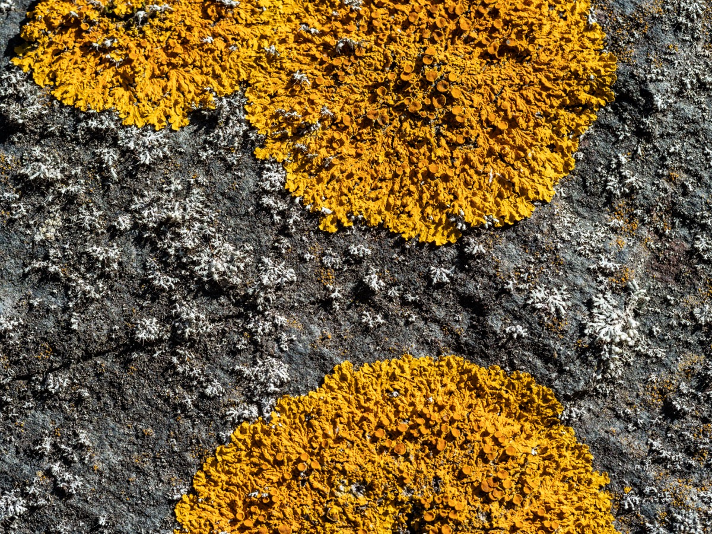
Stranger to the house
An essay on photography and In Search of Lost Time
Introduction
Several weeks ago, I travelled with my wife to southern Maine, where I spent my summers as a child. I brought my camera and lenses with me, as well as In Search of Lost Time, which I was reading for a course. My goal was to use the novel to help me learn about art, think carefully about my photography, and then, hopefully, to take better pictures.
♦ ♦ ♦
I didn't know much about In Search of Lost Time when I conceived this project. I knew it was a very long novel by Marcel Proust about a young man in turn-of-the-century France, and I knew that art and memory were primary themes. As I came to learn, the novel is the story of a young man—an almost-unnamed narrator who may or may not be Proust himself—searching his memory, his encounters with art, his social interactions, and his life generally to find the materials for a novel—a novel that may or may not be In Search of Lost Time itself. I also learned that photography isn't a major focus of the story. When it appears in the text, it's not given much respect as art. In fact, quite the opposite: the idea that photography might be art doesn't cross the narrator's mind. Proust uses photography as a metaphor for the perception of objective reality, which he contrasts with artistic modes of perception. In the narrator's telling, cameras are mechanical devices that capture things the way they are, not the way we see them or the way an artist might portray them. These moments feel strange in a text as subjective as this novel, but the narrator's purpose in these moments isn't to prove the existence of an easily-captured objective reality, or to say anything about photography at all. Rather, he uses the medium as a contrast for the modes of perception he is more interested in: modes of perception influenced by social prejudice, love, artistic purpose, or memory.
In In Search of Lost Time, photography is a mechanical process in which a camera records the way its subject looks onto film. You point the camera at the subject, fiddle with some knobs and levers, click the shutter, and voilà: you now have an image that reflects objective reality as it was in that moment. This can have devastating consequences, as when the narrator's eyes operate like a camera when he returns home to see his grandmother after a long absence. For the first time, he sees his grandmother without the "animated system" and "perpetual motion" of his mind, memory, and love for his grandmother, but sees her as she is: "red-faced, heavy and vulgar, sick, day-dreaming, letting her slightly crazed eyes wander over a book, an overburdened old woman whom I did not know" (III.185). The photographer his eyes imitate in this moment is a "stranger to the house," someone who does not know the subjects he's been asked to photograph, and will never see them again. This process of perception occurs "automatically," operates "mechanically," and imitates the transfer of light as though onto "a purely physical object, a photographic plate" (III.183, 184). When the narrator says that his perception of his grandmother "was indeed a photograph," what he means is that he has activated a part of his mind that is a stranger to all knowledge, all memory, and even consciousness (III.184).
In Proust, photography is honest, but it is not artistic. In fact, the narrator's grandmother adds another charge to the indictment against photography: it is irredeemably vulgar. She would like to decorate the narrator's room with "photographs of ancient buildings or beautiful places," but despite the "aesthetic value" of the subject, "she would find that vulgarity and utility had too prominent a part in them, through the mechanical nature of their reproduction by photography" (I.54). She seeks to preserve the artistic value of these subjects through "thicknesses of art," by which the narrator means finding photographs of paintings of these subjects, or instead of photographs, well-known engravings (I.54). These insulating layers of artistry minimize the vulgarity of photography's mechanical nature, but, as the narrator notes, give him an image of Venice that is "certainly far less accurate than what I have since derived from ordinary photographs" (I.54). Artistic value depends on subjectivity; the objectivity photography allows makes photographs vulgar.
These views of photography were common during Proust's time, though they had already begun to diminish. Photography began as a scientific novelty, not an art. For example, L. J. M. Daguerre, the inventor of the daguerreotype and professional painter, introduced his creation to the public as a "chemical and physical process that gives Nature the ability to reproduce herself" (Marien 23). There is no role for the artist or artistry in a fundamentally scientific and industrial process. In his essay "The Work of Art in the Age of Mechanical Reproduction," the scholar Walter Benjamin argues that technological advances—photography chief among them—"neutralize a number of traditional concepts—such as creativity and genius, eternal value and mystery" (Benjamin 20). Reproducibility drains art of its "aura"—a patina created by its "authenticity" as an object created in a particular time and particular place by a particular artist (22). "The technology of reproduction detaches the reproduced object from the sphere of tradition," Benjamin writes, and one imagines the narrator's grandmother nodding along as he uses a series of violent words like "revolution," "massive upheaval," "shattering of tradition," and "comprehensive liquidation" to describe this process as it rips through the cultural world (22). For Benjamin, a Marxist, this liquidation of art is a positive political outcome, though one can't miss his ambivalence in his diction. For him, the "fundamental question" is not whether photography is art, but "whether the invention of photography had not transformed the entire character of art" (28). In the end, however, the value of authenticity proved more resistant to reproduction than Benjamin imagined; those with an interest in cementing their status through the ownership of unique objects invented new ways to keep art scarce. One wonders what Benjamin, the narrator, or his grandmother would think of the 2011 sale of "Der Rhein II"—a print of a digitally edited photograph—for 4.3 million dollars, or of the current craze of NFTs.1
♦ ♦ ♦
On one level, these views of photography are ridiculous. Of course, photography is art, and of course it's infused with the subjective perspective of the artist. It's no more mechanical than playing a sonata on a piano, it's no more objective than painting a bowl of fruit, and its reproducibility is not an important concern for an amateur like me who rarely prints his pictures, let alone publishes them for money. The photographer makes endless choices on the path between reality and the photograph; choosing the subject, framing the shot, exposing the picture, and developing the picture all involve a multiplicity of artistic decisions. And yet, the narrator and his grandmother's statements can't be entirely dismissed. Photographs can be vulgar, and taking a picture often feels vulgar as well. Also, while a camera isn't a magical device that allows us to see an objective universe outside of our own perspectives, it isn't entirely subjective either. The whole purpose of a camera is to accurately record what things look like. Cameras are not paintbrushes, and taking a picture does limit, or at least shape—in a way that painting or other forms of art do not—the subjectivity of the artist. Also, reproducibility may not matter much to my prints, but the question of to what degree a picture can reproduce the authentic aura of a moment or its subject is important to me. It's worth asking what makes photography art, or perhaps more precisely, what gives a photograph the power to move me and its viewers, and what prevents it from being vulgar.
These questions are challenging. As a photographer, I have a naive goal that has remained constant since I first began to take pictures: to photograph my subject faithfully. At its best, my photography is not a process of creating meaning, but finding it—I believe that in the right light and looking from the right angle, a good picture can be taken of anything. The reason for this speaks to a deeper unity inherent to the material world; in existing, everything contains certain coherences that—when exposed faithfully—can evoke emotions in the viewer, spark interest, and cause the viewer to reflect and reconsider. Everything has form, and photography can discover that form, allowing a glimpse of that deeper coherence. Taking a good picture of a stream feels like meeting a naiad; in the arrangement of the rocks, in the arrested movement of the water, in the light filtering through the trees, the viewer should be able to feel the cold water on their ankles and the spray from the rocks on their face. Both the photographer and the viewer should feel like they have encountered something fundamental to the nature of the stream. This process isn't mechanical, or at least it isn't entirely mechanical, but it does feel like discovering something that's really there—something objectively real—and the way one finds that germ of reality is by trying to make the picture hew as closely to the reality of the subject as possible. The narrator's "stranger to the house" would be the best possible photographer; a robotic camera that through some automatic mechanical process captured the true nature of the subject would be a more insightful artist than I could ever be. In its emphasis on the quality of the subject, a good photograph's artistry is subtle and delicate, and a good photograph feels simple and inevitable; it's possible to forget that the photographer is there at all.
The problem is that few pictures achieve this, and even when they do, the feeling doesn't tend to last. Vulgarity lurks within all photographs—at least, all of my photographs. I fully accept that other photographers' work may not have the same issues I do; plenty of photographers include themselves and their artifice in the frame, and make no claim to objectivity. But my photography claims objectivity, but the artifice and subjectivity required to take the picture sullies this claim. This dirty little secret—that the photographer made the picture—mars the photograph like a fracking pad carved into the prairie; in sucking energy out of the subject, it spoils the view. That said, we don't always notice this vulgarity, either in viewing or taking photographs. What we would identify as a vulgar photograph is one in which the effort required to make the photograph artistic is too visible. In seeking to enhance the beauty of the sunset, the Instagram filter renders it empty; in seeking to highlight a flower, portrait mode's false aperture blur draws attention to itself. Sometimes, overly-elaborate arrangements to take a picture make the process feel vulgar. When I go to great lengths to achieve a certain shot, like a time-lapse or a macro shot, I feel like a wildlife photographer who baits their subject, or a landscape photographer who elbows through the mid-February crowds to get yet another shot of the Firefall.2 But even when I stumble on an unusual bird, perfectly framed in the wilderness, and taking its picture feels like an encounter with the poetry of existence, editing the photograph to achieve a certain look often brings me back down to Earth. And let's not even discuss what it feels like to craft an engaging Instagram post out of these supposed glimpses of the ineffable and unknown…
My understanding of photography inverts Proust's: to me, photography is art, but it is not honest. When I take a picture of a mountain, I pretend that the mountain speaks for itself. To faithfully portray the subject is to lie about my work and my role in creating art out of reality; I pretend to 'take' a picture, as though I'm a beachcomber stumbling on a perfect shell, but in fact I'm making it, as pretentious photographers say, crafting the shell with the help of several expensive and complicated tools. I'm like someone who's 3D-printed the perfect shell, and then, with the help of an understated Instagram caption, passed it off like something I found in a tide pool. And while I can't usually see the vulgarity in my own photos, a better photographer than I, with a better understanding of the tools and decisions that go into photography, would be able to. Someone who knows how a 3D printer works would be able to differentiate my shell from the real thing. Skill as a photographer is simply the ability to hide one's role in the final product, and as I grow as a photographer, I find the process increasingly disenchanting.
♦ ♦ ♦
My goal is to take more meaningful pictures, by which I mean pictures that create in me and the viewer the sensation of encountering something significant, mysterious, moving and real. These pictures should evoke emotions, should cause the viewer to pause, to linger, to question and reconsider the subjects, to see things anew, but not to repulse the viewer—or me—with an awareness of the artifice required to create them. I'd like to understand what gives certain photographs this kind of artistic merit, and how I might avoid the vulgarity that lies within them. In fact, as I write these words, I have taken the pictures already, and I have begun to edit them. There are some good shots, and I am hopeful that there is artistic value in them. In a previous draft of this introduction, I inserted an invocation of my honesty; I promised to "tell the truth about the pictures". I've since realized this is impossible, and so my promise for this chronicle is to tell truths, if not the truth. I will not disguise my role in creating these pictures, I will not pretend that the subjects speak for themselves, and I will lay bare my artifice—a good portion of it, at least. My goal is to explore the vulgarity and value of photography, and not (as I have in so many Instagram captions) to ellide the difficult and unflattering questions of good pictures. I am hopeful that their power can survive the process, and I wonder whether, having interrogated the vulgarity of photography, my idea of fidelity to the subject can be replaced with some stronger basis for artistic value.
Section 1: The Bog
Artistic Intent / Preconceived Notions / Discovery
Click images to enlarge
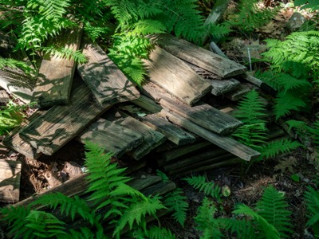
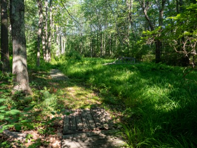
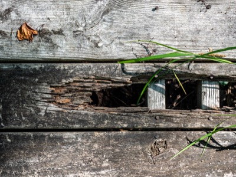
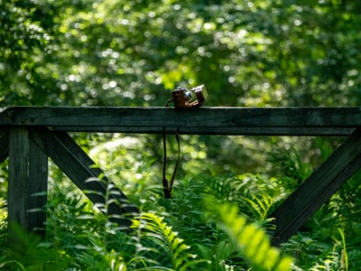
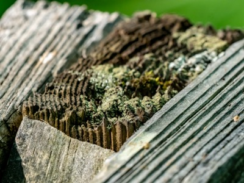
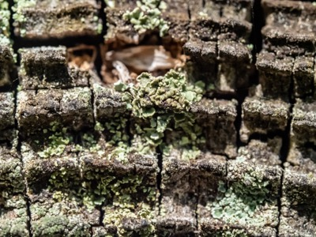
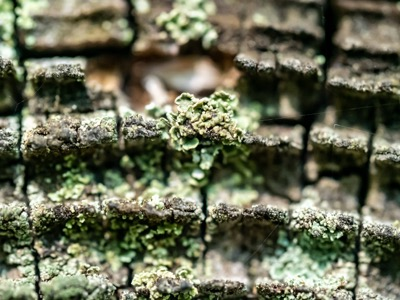
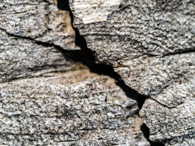
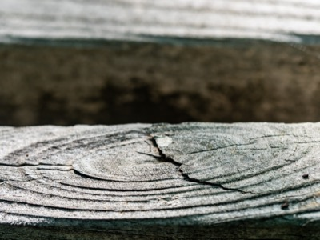
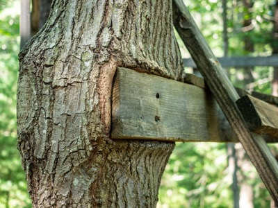
The Bog
Artistic Intent / Preconceived Notions / Discovery
My first photo session was in a patch of forest and swamp behind my grandparents' house, which we call the Bog. I gathered my gear around noon and walked down the hill from my parents' house into the barely-visible entrance to the trail entrance at the bottom of the lawn. I slipped onto what remained of the trail, and though it was cooler under the cover of the trees—it was a hot, sunny day—the air felt thicker and moist. Using my go-to zoom lens, I snapped a few warm up shots to get the light, but also might be useful to establish the Bog's basic geography. I took a few of some decomposing planks, then turned my attention to the crumbling bridge on which I'd once been ambushed by a swarm of yellow jackets living beneath its span. Even now, more than two decades later, approaching the bridge gave me a feeling of wariness and apprehension, although much more mildly than in previous years.
I'd brought my macro lens to be able to photograph the aging, pitted wood of the bridge, but even in the sunny spots, the light wasn't quite bright enough, so I found myself frustrated, unable to create enough depth of field without dialing the ISO way up. Macro photography is tiring, fussy work—lots of minute adjustments as I bend over a tripod—and I began to sweat, steaming up my glasses and the viewfinder. I could tell that only a tiny proportion of my photos would be sharp enough, if any. I stood up straight, pulled out my water bottle, and leaned against the cantilevers of the footbridge to take a drink. In between sips of my warm water and slaps at mosquitos biting my ankles, I looked around the Bog, and tried to remember what the Bog was once like.
♦ ♦ ♦
My grandfather created the Bog. Our personalities imprint onto the spaces in which we spend our lives, and my grandfather—an exceptionally meticulous person who lived in one place for a long time—left a bigger imprint than most. Beginning in the 1960s, my grandfather cut trails, dammed the swamp, dug out a pond, and built a bridge. He picked up sticks from the trails, which he stacked in neat rows on the piney ridge towards the back of the property. He raked the pine straw, installed slats on the steeper or wetter bits of trail, and maintained the old stone walls running around the edge of the property. In the summer when the Bog was dry, he mowed the grasses, ensuring the dominance of the irises each spring. Using a thermometer installed onto a large white pine near the bridge, he maintained a chart of monthly high and low temperatures, which he posted near the kitchen table. My grandfather also maintained a moss meadow and the pet cemetery, which predated the family's tenure in the house; the earliest denizen, Wolf, died in 1928. Since purchasing the house, many of my family's pets have been buried there, including a series of dachshunds named Henry, my grandparents' cats Min and Random, and my parent's dogs, Louise and Murphy. When my sister and I were children, he built a platform between three trees overlooking the pond. Sometimes, the three of us would climb up there after dinner to share a Pepperidge Farm Coconut Cake. They're heavy, sickeningly sweet, and too big for three people, but I remember that we loved them enough to argue over who got to lick the filmy cardboard platform on which the cake sat. Whoever won would inevitably feel a bit queasy for the rest of the evening.
My grandfather died in April of this year. He had been living for the last 18 months in a residential care facility, where he'd moved soon after attending my wedding. He spent the pandemic there, and though he didn't die of covid (he did catch it over the winter, but his case was mild), his death represents the toll of the pandemic for me and my family. It's hard to say with any certainty that he would have lived longer without Covid-19, but isolation's catalytic effect on dementia is well-known.3 Also, while his dementia and Parkinson's had changed him before the pandemic, his decline was only more noticeable through the facility's dining room window, where we would gather to wave to him as he ate lunch. I did see him before he died—by April of 2021, the facility had relaxed its quarantine for patients in hospice—but he was already unconscious. When he died the next day, it was like the final note of a lengthy coda; his death had begun some time before. His funeral was on June 27th; we arrived the day before, and two days later, I went out with my camera to try to capture what my grandfather's death meant to me. My theory: my grandfather's death was the most important thing that happened in the last year; therefore, it ought to be possible to take some pictures that capture some of its meaning, and help me to grieve his death.
I hadn't yet read far enough into In Search of Lost Time to make this comparison, but I felt like the narrator in the period between seeing his grandmother photographically and when she is resurrected in his memory some time later. The version of my grandfather who died was not my grandfather, at least not fully; he was an overburdened old man, "whom I did not know" (III.185). I felt like that grandfather—my real grandfather, the one I knew as a child—had disappeared without my noticing the disappearance. This process took years, and even when he died, there was still something of him there, but his absence felt sudden and complete nonetheless, like someone slipping out of a party without saying goodbye. I missed—and continue to miss—my grandfather whom I loved; what I hoped to photograph, or what I hoped to use my photography to experience, was something like what the narrator experienced upon his return to Balbec, when his grandmother reappears to him in memory: a resurrection. She had been dead for some time, but returning to a hotel room in which his grandmother had once soothed him, the narrator sees "the face not of that grandmother whom I had been astonished and remorseful at having so little missed, and who had nothing in common with her save her name, but of my real grandmother, of whom, for the first time since the afternoon of her stroke in the Champs-Elysées, I now recaptured the living reality" (IV.210-11). Paradoxically, it is in this resurrection that the narrator "became conscious that she was dead," by which he means conscious of his grandmother's death in an emotional, bodily, deeper-than-intellectual sense (IV.211). Even now, as I write these words, I still feel a sense of unreality in my grandfather's death, an incompleteness to my mourning. I can accept that an old, sick man who resembled my grandfather died, but this doesn't have the emotional impact of my grandfather's death; still, I feel that he's not dead, but just missing. That day, gathering my lenses and tripod into my backpack, I yearned on some subconscious level to achieve that resurrection, to recapture my grandfather, and to finally fully understand his death.
♦ ♦ ♦
Even if my aim wasn't obvious to me, it was obvious that I should shoot in the Bog. My grandmother continues to live in their home, and any photographs there—even of his workshop, or his collection of model boats—would show her influence more than his. But the Bog was his alone, and since he stopped maintaining it, no one has touched it. I'm not sure when that was, but thinking back, it was clear even in my teens that he was doing less work than he had when I was a child. Some of lesser-used trails became overgrown and disappeared altogether, planks stopped getting replaced, and the charts were not updated, then removed from the wall. By the time I walked into the Bog, it had been years since anything had been done to it. This seemed to me as good a symbol as anything else, so I sought to take pictures that would capture his death through the slow overgrowing of the Bog. Perhaps I'd find an image to represent what it means to die slowly, or perhaps I'd be able to photograph what it feels like to be missing someone who had such a big impact on me and others. Or maybe—and to be honest, this didn't occur to me until I was editing—perhaps I'd be able to find a hopeful image of renewal and vibrancy in the enthusiastic growth of the plants. In finding these images, I'd be able to present images of a forest that don't align with our ordinary perspective or preconceived ideas of what a forest is supposed to mean, and I might be able to do the same for my grandfather's death. I hoped to surprise myself and the viewer, to discover within my subjects new and insightful images that would cause us to see these subjects anew.
My aim as an artist is similar to what the narrator sees in the paintings of Elistir, the fictional painter the narrator befriends in the second volume. Elstir's studio is "like the laboratory of a sort of a new creation of the world," a new creation defined by the absence of a priori concepts, or "intellectual notions" that are "alien to our true impressions" and cause people, when seeing something for which they have a name, "to eliminate" "everything that is not in keeping with that notion" (II.555, 556). Notions prevent seeing things as they are, and what is remarkable about Elstir is that his paintings—through the use of visual metaphor and lack of "all demarcation" and "fixed boundary" between objects—render everything unfamiliar, new and strange (II.567, 568). The narrator compares this to creation: "if God the Father had created things by naming them, it was by taking away their names or giving them other names that Elstir created them anew" (II.566). In fact, the narrator compares Elstir's work to photography, specifically the "'wonderful' photographs" that present an "unusual image of a familiar object, an image different from those that we are accustomed to see, unusual and yet true to nature, and for that reason doubly striking because it surprises us, takes us out of the cocoon of habit, and at the same time brings us back to ourselves by recalling an earlier impression" (II.570). I am less interested in optical illusions and first impressions than Elstir, but I hope that my pictures find new, deeper aspects of their subjects, presenting views that escape preconceived notions that you or I bring to them. Like the "stranger to the house" whose photography reveals the narrator's grandmother as she truly is, not as the narrator remembers her, I hope that my camera can capture surprising insights normally blocked by our habitual ideas and concepts.
♦ ♦ ♦
This is why I put the pictures before the explanation; if I hadn't you would have had no opportunity to view them on your own terms. This was crucial, and yet, I hoped you would see what I tried to depict—not ordinary pictures of a lovely patch of woods, but something new and unique connected to my grandfather. Of course I know that you cannot have been aware of the exact situation with my grandfather and the Bog. But in the mechanical precision of the camera, there is a claim to objectivity and insight into the real nature of things, and good photography should be able to communicate these insights without the aid of explanations. When I take a picture, my careful work is a claim to capture their subjects as they are. Even if I select the subjects, my hope is that the pictures reveal something of their nature—not mine!—that is interesting, surprising, compelling, or evocative in some way. They should feel moving, but the power to move should come from the subject. In this case, my hope is that aspects of my grandfather's death are embedded into the reality of the Bog, and that my pictures depict or reveal those aspects, not specifically, but evocatively. These tonal emanations should affect both me and the viewer; I hoped to uncover feelings and thoughts about my grandfather through the process of photographing his woods. If they are real, and if my art has succeeded in capturing them, I hope that you can feel these tones as well.
Take, for example, this picture of my grandfather's pile of planks:

My hope for this picture is that your eye goes first to the bright spot on the plank, and stays in the brighter part of the picture for a time. Your initial impression should be cheerful; it should feel clear, dry, and delicate. However, as the eye lingers, it should fade lower and to the right, following the planks. There's a large darkened region in the lower right of the picture, and this shadowy area under the top planks should give off a damper, cooler, more melancholy feeling. The colors are muted and blueish; even the bright spots don't have much warmth. Somber details should begin to emerge: most of the ferns aren't in the light; the planks are covered with litter, and their weathered, pitted texture shows that they are rotting away. These planks have apparently been here for some time. I hope that you notice the nails sticking up out of some of the planks, and wonder why they are there. These planks aren't about to be installed anywhere; likely, they were pulled out of something, and intended to be carted away. Why weren't they? Were they meant to rot here forever? You might also notice that the lower planks are neatly stacked, whereas the upper ones are just jumbled together. You wouldn't be able to speculate why this is, but my hope is that you feel a sense of sadness, of loss, and an intuition that this pile of planks speaks to a long, slow decline, the slow death of someone in whom life and death mingled for a long time. And yet, the warmth can't be entirely drained from the greens and yellows tones of the plants or the sunlight; the picture wants to glow with life. If you look at the picture long enough, you should end somewhere closer to where you started: hopeful, peaceful, and quiet. If you felt this when you first saw the picture—or can feel it now, imagining yourself as a new viewer, you feel what I have felt as I took and edited this picture. If this is the case, I have succeeded as an artist: the picture faithfully captures my grandfather's pile of planks, and some of the meaning embedded within them.
Even if you did feel the sorts of things that I'm describing—which you probably didn't, but now may be talking yourself into thinking that you did—but even if you did, this edifice of meaning depends on a lie: that my photos discover anything on their own. Consider these versions of the same picture:


Consider how these pictures make you feel; how the first feels muddy and unformed, how the second is much brighter and cheerful than one I chose for the gallery, how the third is dramatic, even melodramatic. None of them are the true version, not even the unedited one; from selection to framing to exposure, which in this case was calculated automatically by the camera, there are far too many choices that go into taking a picture to declare even this picture untouched. The version I selected—or, put more honestly, the version I carefully tuned to match the tones I hoped to convey—conveys very little, if anything at all on its own. Its evocative power, if it has any, comes from my artistic desire, which itself derives from my preconceived notions. When I walked into the Bog, I didn't just carry a backpack filled with camera equipment: I also carried in the concept of the Bog itself. This concept—that Bog reflects my grandfather—shaped my artistic desire. I sought to capture what I understood, which is how it generally goes. Except for photographers who do not know how to use their cameras, there is no larger factor in the ultimate impact of a picture than the desire of the photographer to achieve certain impacts, which itself depends on the photographer's knowledge, concepts and understanding. This process also operates subconsciously; even if I feel like I am discovering new insights into the nature of my subjects—either while photographing them, or while editing—I cannot be certain that these discoveries are external to me, or indeed whether they are discoveries at all.
When Elstir paints, the narrator argues that he makes an effort "to strip himself, when face to face with reality of every intellectual notion," making himself "deliberately ignorant before sitting down to paint," forgetting "everything that he knew in his honesty of purpose" (II.572-3). Even if this were possible for Elstir—one imagines through some sort of meditation practice or drug, though this isn't described in the novel—the narrator immediately undercuts this assertion by reproducing at length Elstir's conventional thoughts, similar to the narrator's own, about the porch at Balbec. For the narrator, Elstir's ability to turn off his conventional, social side is more evidence of his "admirable" artistic qualities, but the dichotomy between "Elstir the theorist" and "Elstir the man of taste," as the narrator describes in The Guermantes Way, seems more important to the narrator than it does to Elstir himself, who doesn't describe himself in these divided terms (III.576). Elstir the artist, who paints with a perfectly empty beginner's mind, seems like a myth even in the novel that creates him. Needless to say, this sort of art is certainly a myth in the real world, or, speaking for myself, Elisterian conceptual freedom is certainly not achievable for me.
My artistic intent is an interloper, an uninvited guest whose presence spoils the soiree. For one, your detection of my desire is vulgar and embarrassing. You have seen my willingness to impose that desire on a beautiful forest and my grandfather's death; am I any better than a slash-and-burn logger or an influencer who live streams their wedding? Even if not, the baggage I carried with me into the Bog, whose weight hung from my arm as I set up a series of intricate and complicated shots and pressed its imprint into the pictures as I edited them later, gives the lie to any idea that these pictures speak to the reality of my subjects. When I went to look for images of my grandfather's death in the Bog, I found them, and even the small surprises I discovered as I took and edited the pictures operated within that framework. It's possible, of course, that something new slipped in there, either in my process of taking them, or in your viewing. But your viewing is beyond my control and my knowledge; I can only consider it hypothetically. And any surprises while I had the pictures can't be proven to be surprises, or external to myself—these, too, might be expressions of my preconceived notions.
♦ ♦ ♦
That day in the Bog, immersed in the humid air, I felt like I hadn't discovered anything. Some of the macro shots might be just acceptable technically, but none of them felt like they had anything new to impart. All of my fussing around with my tripod and lenses made me feel like a medieval travelogue writer, plagiarizing most of my narrative, and inventing the rest—though no doubt a medieval travelogue writer wouldn't be as committed to the concept of objective reality. While I mused along these lines and waited to cool down, I pulled out my other camera—a 1940s Argus C3 that I'd bought for $25 at an estate sale a few months before. This camera—which you can see in one of the photographs from this session—barely works. Besides the problem of remembering which film I've put in the camera (there's a dial to record this on the back of the camera, but because of the advances in film technology since the 1940s, the ISO ranges that it considers as options are useless), the aperture is all right, but the shutter speed doesn't function at all, and the film winder is hopelessly unreliable. I regularly get accidental double exposures, or split exposures, or break the film, in which case I go to a windowless bathroom, put a towel along the base of the door, and try to rewind it under the light of my red headlamp, which causes havoc with the color of the film. But to me, these problems are a benefit; in their unpredictability, they allow me a partial escape from the tyranny of my intentions. In its unreliability and resistance to my purpose, the camera itself introduces a degree of Proust's stranger, or Elstir's empty mind; if you can just look through the poor quality of the film and the exposures, it allows glimpses of the subject itself, unsullied—or less sullied—by my interpretation and desire. There are elements of vulgarity in these pictures as well—in the metaphotography and pretentiousness of some of these shots, I feel like the narrator's grandmother, trying to insulate the value of the subject with "thicknesses of art". Nonetheless, after taking the pictures, I felt a bit better.
I walked out of the Bog an hour or so later, having gone back to my real camera to take some pictures of the tree platform and my grandfather's dam. I tried to photograph his moss garden, but under the onslaught of a changing climate, or perhaps through neglect—though I'm not sure how my grandfather could have maintained a moss garden, now that I think about it—it had dried out completely, leaving behind just grass. I had many mosquito bites on my legs, and I felt that most of the pictures had been a waste of time. And yet, the thought that there might be something on the film in the C3 sustained me. Scrolling through my camera as I walked my parents' house, I realized that a few of the digital shots felt like they had captured something as well. The earliest ones of the planks seemed more promising than they had when I took them. I felt certain I had a few good shots, and while I wouldn't be able to express clearly what these shots meant to me until well after I'd edited them, and while this process remains incomplete even as I write these words, I felt the weight of my grief for my grandfather lift a bit. Seeing his work fade into nature felt peaceful and calm, a part of the natural order of things, not quite as painful a loss. Of course, to really know what I had, I'd have to go back home and edit the digital pictures, and then send off the film to be developed. Before doing so, it's possible to imagine almost anything in the film, but a real accounting has to wait until the film comes back.
Film photographs from the Bog
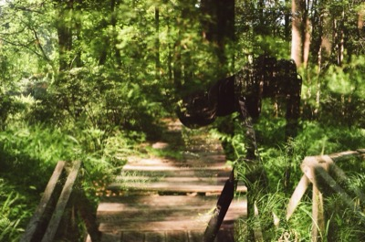
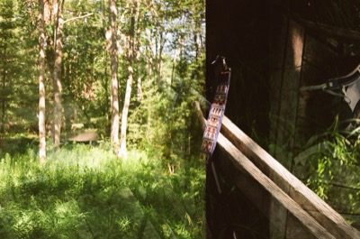
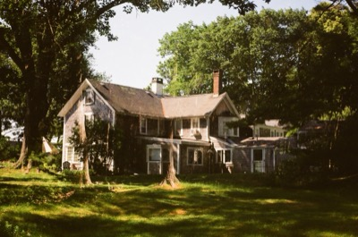
Section 2: Gerrish Island
Atmosphere & Light / Artistic Value / Other Atmospheres
Click images to enlarge
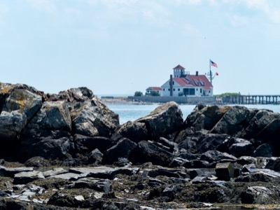
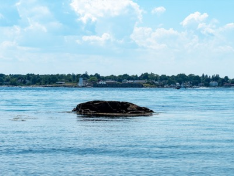
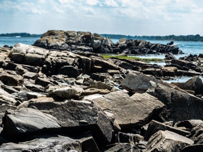
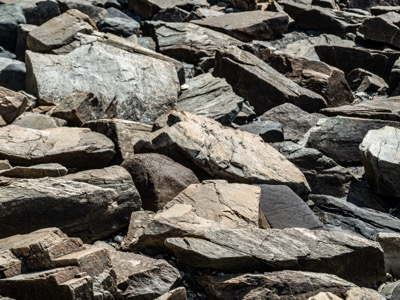
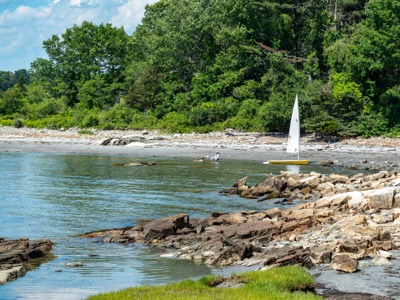
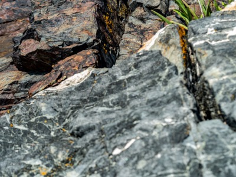
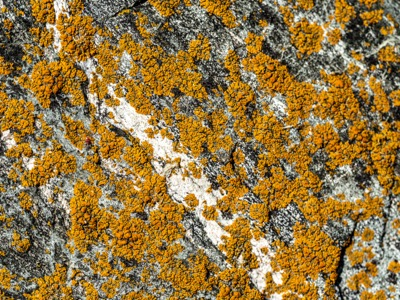
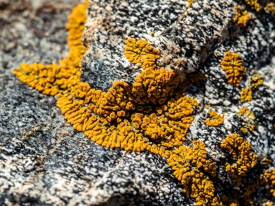
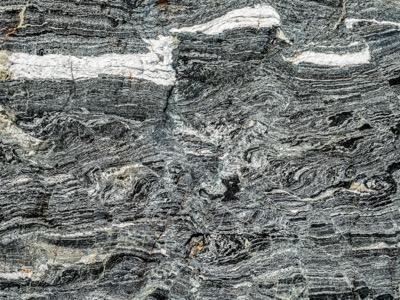
Gerrish Island
Atmosphere & Light / Artistic Value / Other Atmospheres
Several days after my session in the Bog, I went with some of my family to our beach, which we refer to by the name of the island where it is located: Gerrish Island, or Gerr for short. I hoped to take some pictures that would capture the atmosphere of this beach, which—having spent much of my childhood there, and having taken pictures at Gerr many times—I know to be exceptional for its clear, crystalline light.
♦ ♦ ♦
Outside of any but the narrowest scientific contexts, atmosphere is a slippery concept, resistant to firm distinctions. In photography, atmosphere might refer to the mood of a picture, or certain kinds of ethereal, soft moods which are called atmospheric, or simply to the atmosphere itself, which has dramatic effects on the light and colors of the photograph. The atmosphere shapes the light, which shapes… the picture's atmosphere. In fact, light and atmosphere are so closely linked as to be interchangeable, at least outside during the day. Skilled editors or those with carefully controlled studio environments can counterfeit certain lighting conditions, creating atmospheres at will. But for photographers like me who shoot primarily outside during the day, atmosphere is a factor of the quality of the light, which itself depends on many other factors: the height of the sun, and the atmospheric conditions, including the air's humidity, temperature, and degree/type of cloud cover. Other factors can come into play, such as the cover given by trees, the effects of precipitation, the reflectivity of the ground—sand and snow, for example, change a picture's atmosphere—or other sources of light besides the sun, which are relevant at night.
Some photographers, especially landscape photographers, consider atmosphere or light to be a truer subject of their pictures than the objects that fill their frames. For example, in his book Mountain Light—an influential book among landscape photographers and in my own development as an artist—the photographer and mountaineer Galen Rowell wrote landscapes are not "simple objects to be photographed" (Rowell 4). In his view, photographers "are never photographing an object, but rather light itself" (4). This assertion has a scientific basis: in a chapter on capturing color faithfully, Rowell writes that "all objects are colorless—black, that is—until they reflect or transmit light" (76). After having "this simple realization," Rowell reorients his entire artistic approach around light: "instead of looking at the natural world for objects to photograph in color, I began to look for the light" (76). Much of his book focuses on scientific explanations of various phenomena of mountain light—including the atmospheric conditions that create them—as well as technical discussions of how to photograph these phenomena. His assertion, about looking for the light, for example, comes in the middle of a detailed discussion of how cameras and color film react to light differently than human perception. Success as a photographer, Rowell argues, depends on understanding the atmosphere and its effect on light.
However, light is not just a technical concern or scientific phenomenon in Rowell's analysis, but also a metaphor for the artistic value of photography, which comes from both the spiritual truth found in nature and the photographer's personal artistic vision. Pictures succeed or fail on the basis of their light; he suggests that "where there is no light, [photographers] will have no picture; where there is remarkable light, they may have a remarkable picture" (4). Rowell often describes mountain light in spiritual terms, such as "magic hour," or "magic light," and begins his book with Cedric Wright's assertion4 that "the mountain photographer is interpreting the face of nature—that mysterious infinity, eternally a refuge, a reservoir, an amplifier of spirit; a mother of dreams" (xiii). At the same time, the concept of light also represents the artist's personal vision, which must be carefully balanced with the spirit of the subject. His "dynamic landscapes"—the subtitle of his book is "in search of the dynamic landscape"—is defined by its balance between "personal vision" and "splendid natural events" (2). "The literal definition of the word photography," he asserts in a later chapter, "is 'to write with light,' and in the mountains I take that as a dictum" (122). As a final example, one of the few quotes from other photographers Rowell includes is from Cartier-Bresson, who argued that photography must contain a "balance must be established" between the "two worlds" of "discovery of oneself" and "discovery of the world around us" (27).
The best example of the tension between these two sources of artistic power is when Rowell compares the light in his work to the "painterly light" of certain Romantic painters like Turner, Church and Bierstadt. This comparison, which strangely includes Rousseau and Dalí alongside the Romantics, suggests a subjective source of artistic value from within the artist (110). In fact, Proust's narrator makes a similar assertion about the painter Elstir when he suggests that his paintings lack the visual hierarchy and discernment that elevates certain aspects of reality above others. The example the narrator gives is a painting of a "waterside carnival," in which the "slightly vulgar" woman's dress "shimmered" "in the same way" as the sail of a boat, the water of the harbor, the landing, the trees and the sky (III.576). In Elistir's painting, "she is beautiful too; her dress is receiving the same light as the sail of that boat, everything is equally precious; the commonplace dress and the sail that is beautiful in itself are two mirrors reflecting the same image; their virtue is all in the painter's eye" (III.576). For the narrator, what makes Elstir's paintings great is their light, and in his analysis, that light comes from the artist: his paintings are like "the luminous images of a magic lantern, which in this instance was the brain of the artist" (III.574). Rowell, however, argues that this light is a sign of these painters' Emersonian "direct appreciation of wild places," which "presupposed color photography" in its aim to "replicate the light of natural moments" (Rowell 110). It's a bold interpretation: in his view, the power of Romantic painters—and even Rousseua and Dalí!—comes from their accurate depictions of nature. But implicit in this interpretation is the awareness that direct appreciation of nature is subjective and artistic; surely Rowell knows that the Hudson River School painters didn't accurately depict upstate New York. Similarly, the narrator's interpretation of Elstir implies that part of his "magic light" is fidelity to objective reality: Elstir keeps the dancing woman in the painting of the carnival when a "man of discernment" would have removed her from "the poetical composition which nature has set before him" (III.576). Light makes powerful artists, but whether in the work of Romantic painters, Dalí, Rowell or Elistir, this light comes both from nature and from the artist.
♦ ♦ ♦
I went to Gerrish Island because of the beach's atmosphere, and in that atmosphere, I sensed a solution to my photographic dilemma. My problem is that I want to use photography to discover the moving, beautiful coherence of the world around me, but the only way I can do so is to utilize my own artistic vision, which feels like sullying that beauty, or inventing it entirely, and then lying about its source. Perhaps, I thought, by locating the source of artistic value in the atmosphere which the subjects and myself are immersed in, I can, like Rowell, find a balance between my artistic vision and the beauty of the external world. On Gerrish Island, both the rocks I photograph and I bathe equally in the sea light and the salty atmosphere; perhaps I don't need to put me and my subject on opposite sides of a clear distinction.
The day I went to Gerr was an exceptionally hot one for June in Maine. This disappointed me; though it made swimming possible—a rare occurrence given the 57° water temperature—what makes Gerrish Island a good place to take pictures is that it's often cool and clear. The sea atmosphere, sweeping in from the mouth of the Piscataqau River with the incoming tide, renders the light with a delicate, sparkling quality with a hint of blue; far-away things feel much closer than they are, and the pictures feel sharp in the same way that pictures taken at high altitude do. On the day I was there with my family, however, the air that rolled in off the ocean felt just as hot and sticky as the air inland. One look at the shimmering horizon was enough to tell me I wasn't going to get the clear, crisp photos I wanted, especially at longer focal lengths. My disappointment intensified when I took some pictures of my sister sailing. The heat distortion made my photos hazy and unfocused; it looked as if my photos were impressionist paintings:
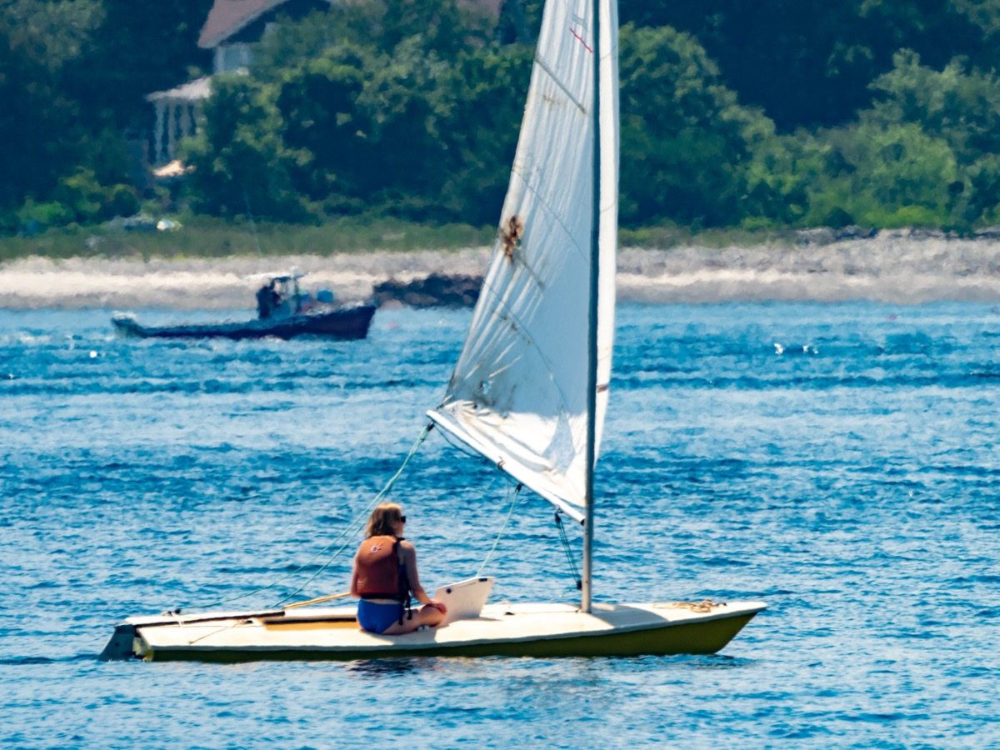
I had wanted to take pictures of a rock field on the southern end of our beach, which culminates in a massive boulder called Storytelling Rock. As a child, I spent many hours on these rocks, searching the tide pools around them for crabs, playing fantastical games with my cousins on Storytelling Rock, or bounding from rock to rock down the length of the rock field as quickly as I could. I don't remember falling or hurting myself once. In my memory—which is bathed in the clear light I associate with Gerr—my feet can't miss their marks. Looking through the wavering, hazy air on that afternoon, the rocks felt hard, hot, and dangerous; I couldn't imagine crossing them without shoes at all, let alone at speed. Storytelling Rock felt small, and it had more lichen and birdshit than I remembered; it was difficult to find a spot where I could clearly see the granite grain. While on top, out of habit, I looked for a quarter that for as long as I'd been going to the beach had been jammed in a crack. I couldn't remember which crack it was, and I couldn't find the quarter.
I also couldn't imagine capturing what I'd hoped to photograph in those rocks. The light was all wrong, and they'd come out hazy and muddy at longer range, and yellow-tinted up close. Storytelling Rock felt small and unimpressive, and there was more lichen and birdshit than I remembered. I could correct—perhaps invent, or recreate would be better words—the colors in post-processing, but I suspected my editing skills could only take me so far. Like the difficulty of describing the feeling of a dream to a bored breakfast-mate, the colors of the mind are difficult to reproduce in Adobe Lightroom.
♦ ♦ ♦
There were other atmospheres that affected my photography that afternoon, like my family atmosphere. My parents, my sister, my parents' dogs, my aunt, my great-aunt and my grandmother all made appearances on the beach that afternoon. My wife, unfortunately, had to work, and so she remained in the wifi at home. Not that my wife would have joined me while I took pictures anyway—she has been known to leave me behind on walks if I bring my camera—an entirely understandable reaction given the tediousness of watching someone take 25 different shots of the same flower. In any case, I spent a lot of the afternoon not taking artistic pictures of rocks, but rigging a Laser, sailing, playing with my parents' dogs, and talking to my relatives. Even when I did take pictures, most of them were social; I took pictures of my sister, my parents, the dogs—my parents wanted a good shot of their 10-month-old puppy Bingley—and my aunt, who asked that I take a series of photos documenting her swimming in the freezing water. None of these, I felt at the time, would be relevant to my project. When I did go on a photo walk, my sister accompanied me, making sarcastic suggestions, getting bored as I fiddled with the tripod for a series of macro shots on top of Storytelling Rock, and eventually abandoning me to rejoin the family. I didn't mind her presence, but at the same time, taking photos alone feels quite different than taking them with another person, and I feel certain the results would be different as well. I often felt like the narrator, who would be able to get to work on his novel, if only he could tear himself away from all of the fancy parties at the aristocratic Guermantes'. Part of the atmosphere on Gerr that day was the social atmosphere, and that atmosphere affected my pictures, even the ones I took alone without anyone in them. Like my sister, I didn't want to separate myself from the family for too long, and given the poor light, I didn't take as much time as I'd planned on my pictures. It felt more important to be with my family.
The idea of locating the success of a picture in its atmosphere or light is freeing, but once we expand our frame to include more than the subject—or more than the subject, the photographer and the camera—it becomes hard to find a reason to stop stretching that frame. Atmosphere is a slippery concept, or a gaseous one; it tends to fill any volume we give it.
For example, I call Gerr our beach, and that this beach belongs to my family helps make it a special place for me; the many family bonfires, games of beach bocce and low-tide expeditions to Aunt Gurden's Island—the government calls it Fishing Island—are as integral to my idea of the beach as its clear blue light. But, like anything involving property and family, the reality of Gerr is considerably more complicated than I understood as a child. The beach is ours in the sense that it belongs to my grandmother, my great-aunt, and my great-uncle in equal parts. When they die, their share will be divided between their descendents; when eventually it comes to me and my sister, we will be two of as many as ten owners, depending on who dies when. Also, my mental geography of Gerr doesn't correspond to the actual property lines. Gerr runs the length of the entire cove, from one rocky outcropping—the unnamed one with a massive dock washed up on it—along the gently curving beach studded with rocks, to Storytelling Rock. But we only own a small portion of this quarter-mile strip. For one, the northern half of the beach has belonged to a semi-estranged branch of the family since the death of my great-great Aunt Lispen in the 1980s. For another, my great aunt who inherited the other half—this was part of the reason for the semi-estrangement—sold her portion of the land during the crash. Since then, our family has only retained a small parking lot fringed with poison ivy, the right of way to get there, and the beach in front of it. This makes me hesitant to linger for long on Storytelling Rock; it is technically trespassing for me to be there. On the other hand, having access to a private beach is a rare privilege that I might designate the socio-economic atmosphere of my pictures. Certainly, that atmosphere is as important as the light; access to beautiful spaces like Gerr or southern Maine, the money to buy expensive cameras, the time to travel to Maine and take pictures: all of these are determinative factors.
One can imagine almost infinite atmospheres that affect my photography. The legal atmosphere matters, and in fact it's visible in the pictures if you know where to look. Ownership of tidal beaches like Gerr is much looser than ownership of dry land; it would be illegal to fence the beach, and while Maine law stipulates that anyone passing through the intertidal zone must be fishing or fowling, in practice it would be miserly to bar the many walkers and kayakers from the nearby public beach. There were many fewer of the beach walkers in my childhood; now however, there's almost always a stranger on the beach. This has a direct effect on my photography; I frame my shots to avoid the beach walkers to keep tourists out of my images of Gerr, but in so doing, create a different sort of vulgarity. We can expand the frame further; if the provenance of the beach and the property laws of Maine are part of my photography, why not the technological atmosphere? Should I credit the engineers who designed my camera and lenses? Why not consider the software engineers who programmed Lightroom, or at least those who engineered either the automatic exposure systems in my camera and Lightroom. Most of my pictures rely on one or both of those systems; I rarely shoot in full manual, and while I often tweak my pictures in post, the automatic adjustments are a good starting place. Aren't the white balance of my computer monitor or the lightbulbs in my study also components of any artistic value in my photographs? Or, as is more likely, do they deserve a share of the blame for any artistic failures? And for that matter, isn't the medium in which I publish the pictures—in this case a somewhat garish website—also relevant to the pictures' merit as art?
Galen Rowell isn't interested in these questions, but they are relevant to In Search of Lost Time. Rowell dispenses rapidly with the idea that editing or developing film has any artistic significance, quoting an 1890 report by the not-very-well-known photographic scientists Hunter and Driffield, which establishes an arbitrary distinction between the "art" of creating "a perfect picture by photography" and the "science" of producing "a technically perfect negative" (Rowell 36). In Proust, however, the atmospheres that produce, affect and surround art are crucial. For example, one of the narrator's principal failures as an appreciator of art is that he imagines them in an idealistic vacuum entirely separate from the material world. When he encounters the porch at Balbec5—an intricately carved church entrance he's idealized for years—"fettered to the square" where its church sits, sullied by its proximity to a café, "an omnibus office," and a bank, and even "reduced by its own stone semblance" into a physical object, rather than a universal ideal (II.323-4). The narrator even uses an atmospheric metaphor to describe this process; the name of the church "ought to have been kept hermetically sealed," but reality is like "a pneumatic force," an "external pressure" "irresistibly" forcing itself into the vacuum of the narrator's imagination (II.325). This moment is an argument to consider art within their atmospheres, as are the structure of the books themselves, whose inclusion of detailed portrayals of the social atmosphere surrounding the narrator speaks in itself to the importance of societal context to art. On the other hand, one can go too far. Upon hearing the fictional composer Vintueil's sonata and its little phrase, Swann (a sophisticated and scholarly friend of the narrator's family) immediately wonders about the person who created that ineffably powerful art. Swann asks Mme Verdurin—his host at the party where the sonata is played—"what else he had done, at what period in his life he had composed the sonata, and what meaning the little phrase could have had for him—that was what Swann wanted most to know" (I.300). The reality, however, is not as resonant as what Swann imagines; in fact, Swann knows Vintueil, but assumes the "genius" who composed the sonata cannot be the "silly old fool" he knows (I.302). The reader and the narrator know that if Swann were to uncover the truth of the sonata's familial or emotional atmosphere, he would discover a depressing and sordid story of the sadism and depravity in the composer's household.6 It is better for Swann's appreciation of the little phrase not to take these questions too far. That said, the work of the novel is to widen the frame to include the full atmosphere of the sonata, which proves to be resonant in a broader sense than Swann imagines, especially when Mlle. Vintuiel's friend (who urges his daughter to spit on Vintueil's portrait) is the one to assemble the fragments of Vintueil's work into the masterpiece it becomes later.9 There must be some limit, but I'm not sure the novel—and certainly not me—knows where it is. The frame must include more than just the subject and the artist, but how wide to open the lens is difficult to resolve.
♦ ♦ ♦
There's a striking picture of Galen Rowell on the back cover of Mountain Light. He's posing in a mountain meadow with his dog Khumbu, wearing short shirts, hiking boots, and a Patagonia shirt, his camera hanging around his neck and his backpack on his back. I didn't see this picture until 2015, which was years after I began to think about photography more seriously. But it corresponds closely with an idea of myself as an artist and a person: adventurous, confident, in nature, and, crucially, alone. Part of my idealization of wilderness photography was the figure of the solitary artist-adventurer, who heads into the wild to encounter it without intermediaries or distractions, including other people. The artist should be independent, and the art should come from nature as much as possible. If any of a picture's resonance comes from some other source, let it be from me. Part of this is my personality; though I've become more social as I've gotten older, I was a somewhat solitary child, and I remain someone who's happy to spend time alone, which, by the way, is something I shared with my grandfather. Some of it is my understanding of photography, though. Photography tends to separate the photographer from other people; besides removing myself from groups to go take pictures, putting myself behind a big lens moves me to the fringes of any social gathering—all the better to capture group shots. It makes me an observer rather than a participant, or it can if I don't remember to put the camera down.
My wife once told me that my pictures were boring because there's never any people in them. I don't accept that calumny, of course, and I will continue to take pictures of lichen and tree bark, thank you very much… but she's not wrong either. There are very few people in my pictures, and as I'm reviewing the pictures to upload to the gallery, I'm realizing that this isn't as important as I'd thought. A photograph's content is part of its resonance, not just its form. However striking my picture of a rock is, it's still just a rock, and even if my pictures of my parents or my sister aren't perfectly framed or exposed, they still carry with them the significance of those people to me. The distinction between Photography-with-a-capital-P and taking a few social pictures is more of a spectrum than a firm distinction; my first gallery from Gerrish Island isn't any more—or much more—artistic than my second. The power of a picture to evoke, to interest, to catch the eye and to move the viewer—none of these depend on a narrow definition of artistic merit. My photos can be more expansive than they have been, and while it is certainly possible to expand the frame too far—not every shot needs to be a wide-angle, and a photograph that admits every relevant atmosphere would be too muddy to distinguish the subject—it won't hurt to let a little more into the picture.
More social photographs from Gerrish Island
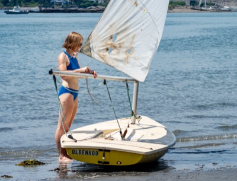
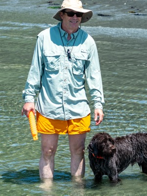
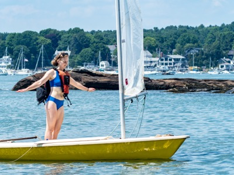
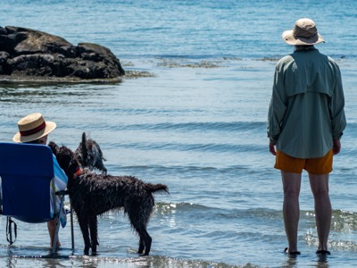
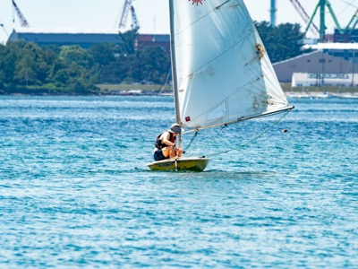
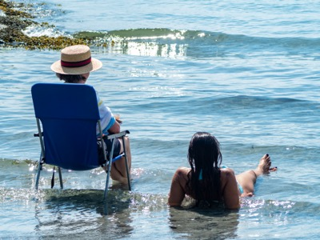
Section 3: The Harbor
Time / Memory / Authenticity
Click images to enlarge
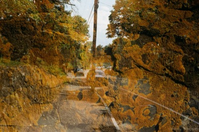
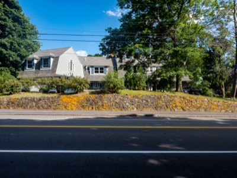
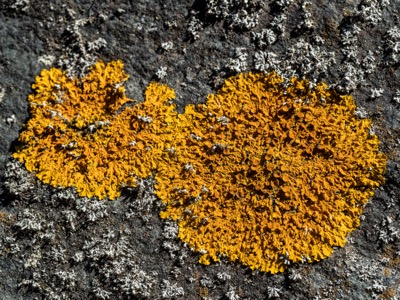
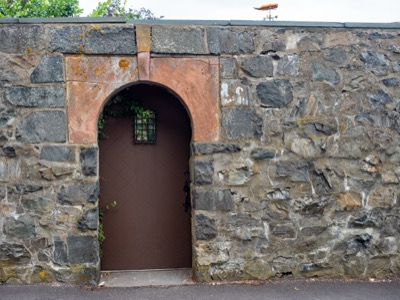
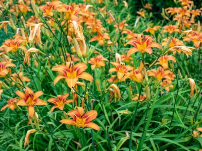
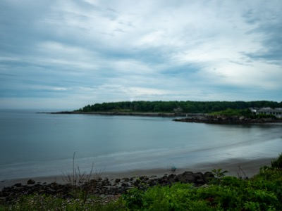
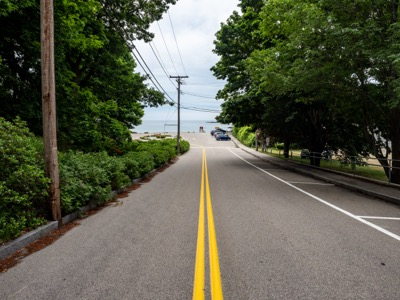
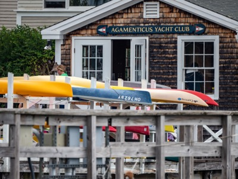
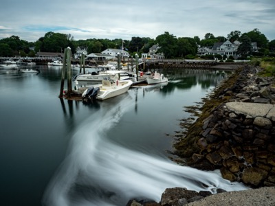
Walking to the Harbor
Time / Memory / Authenticity
Towards the end of my week in Maine, I turned my attention to a particular route that I'd taken many times in my youth: the walk from my parents' house to the harbor. I hadn't yet edited any of the pictures from Gerrish Island or the Bog, and so I was anxious about what I still felt were not very successful sessions. I hadn't had any involuntary memories à la Proust—which were much more important to this project as I originally convinced it—and I thought that I should attack the problem directly. Very little had changed on the route since I'd walked it as a child and an adolescent, and I hoped to be able to take pictures that would recapture something of that period of my life.
The first section of the walk is defined by two stone walls. The first is a retaining wall covered holding up a small lawn in front of a large oceanfront home; the second is a much more imposing barrier separating the Big House—a house that once belonged to my great-grandfather—from York St. The texture of these walls feels as familiar as that of my own skin; even now, carrying my backpack of lenses, I run my fingers along them. They're both stone, but they feel completely different, a sign, perhaps of the entirely different places they occupy in my mind.
The retaining wall's defining feature is its yellow lichen, which covers nearly its entire length. The lichen once felt endlessly tall and long; even now, its top only chest-high and its length only a few strides, the lichen wall nonetheless retains my childhood impression of its endlessness and omnipresence, but shifted from the vertical and horizontal dimensions to the temporal. It feels exactly the same as it did when I was a child; the lichen gives the wall variation and texture; some spots feel soft and springy like a moss garden, others hard and rough, like old leather cracking under the sun. Even the spots of the wall that seem to be free of lichen retain its texture; under the magnification of my lens, it's apparent that no spot on this wall lacks lichen if you look closely enough. It's warm to the touch, as the wall always was on warm afternoons and even late into the evening. The color also feels important to me; its particular shade of yellow vibrates within my mind at a level deeper than association with any specific memory. The lichen—which grows everywhere in York in the same shade of deep yellow—feels like the substrate of my memories of Maine. The light was good, and fiddling with my macro lens and tripod, I brought the image into focus at a magnification that made the lichen in the picture exactly as large as the lichen on the wall. It was easy to capture its texture and color. For once, I felt good about the pictures as I took them.
The Big House wall, on the other hand, felt cool and smooth. There's lichen here too, but much less. I didn't try to photograph any of it—the wall is much taller and straighter, putting it into shadow, so I knew I wouldn't be able to get enough depth of field—and I wondered if whoever maintains the wall scrubs it off periodically. It wouldn't surprise me. I don't know who owns the house now, and in fact I think there have been several owners since my great-grandfather died and the house was sold. But my idea of the owner is very specific: I imagine the owner as a younger Scrooge, or maybe even more like an older, human Scrooge McDuck, since Scrooge McDuck's miserliness didn't apply to himself as well. The reason for this image is the stone door in the wall, which has a small grated window into which it was once possible to look at the lawn and the house. I looked through the window every day I passed, as though checking up on a possession I'd lent to someone else. Later, the owners installed a pool—something I thought deeply vulgar, and then, shockingly, a pool house, which blocked any grate-gazers from seeing the house itself. In recent years, the owners have installed a mirror behind the grating, giving voyeurs like me a horrifying glimpse of ourselves in the act of voyeurism. Part of me still finds this distasteful and totally unwarranted; but a more mature part of me recognizes that it's reasonable to prevent descendents of former owners from jamming their faces into a grating in the wall around a house they own, and have owned for many years. I didn't take nearly as many pictures of this wall; beyond a few showing myself in the act of voyeurism, there's not much else to photograph, and I continued down towards the harbor.
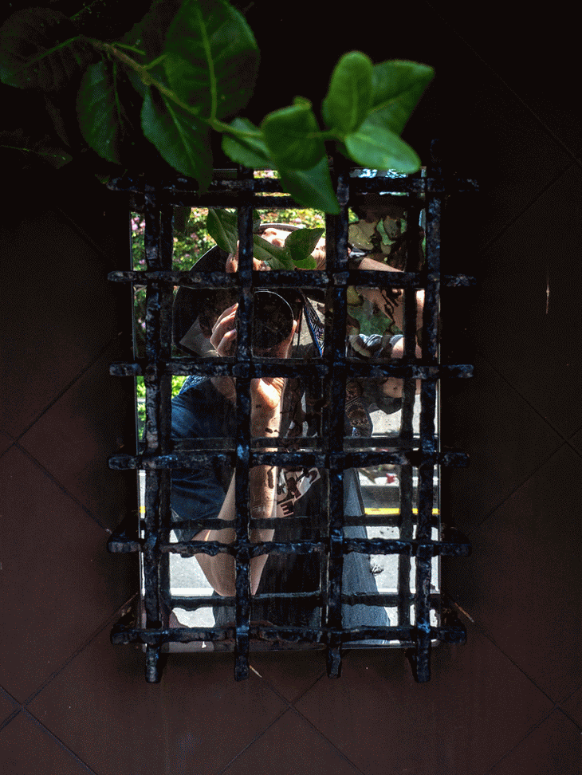
♦ ♦ ♦
As I scroll through the photos from this week and review what I've written so far, I realize that I've believed in two promises of photography. I've already discussed the promise and difficulties of objectivity embedded within a camera, but there is a second promise that is equally important, if more subtle: the promise of timelessness. As I consider what I sought in the Bog, on Gerrish Island and on the walk to the harbor, I realize that I sought a refuge from the passage of time as much as I sought the truth embedded in the reality of my subjects.
A simple definition of cameras might be devices that capture how something looks at a particular moment in time. Within this definition, skilled photographers tend to focus on the first half: devices that capture how something looks. An image is successful if it is visually interesting or compelling in some way, and the moment at which the photograph is taken is less important than the form of the picture, its lighting, its exposure, its focus, or any other of the many aspects that define a photograph's composition. Even some photographs that seem to focus on the temporal dimension of taking pictures—I'm thinking here of photographs of dramatic, singular events like the man blocking the tank in Tiananmen Square, or Tommie Smith, John Carlos and Peter Norman at the 1968 Olympics—still succeed on the basis of their imagery rather than when they were taken. The images are striking whether or not you know their context (this is also why it's so easy to find them used out of context), and certain photographs with particularly good composition dominate among the many other shots of both moments precisely because of their good composition. The same might be said of other apparently-temporal pictures, like of bald eagles or bears snatching fish out of the water, or of whales breaching the sea. While these pictures emphasize the moment in which they occur through the immobilization of normally-dynamic water or fish, the ones that get reproduced and published tend to have excellent focus, and interesting composition as well. Social media amplifies this effect; visually interesting images drive much more engagement than dull ones, regardless of what they depict.
That said, relatively few photographers take pictures intending to capture interesting or powerful visual phenomena. Interesting visual phenomena that are also easy to photograph are rare; most of us learn to stop trying to take pictures of rainbows, constellations or the moon because unless we have the specialized skill and equipment necessary to take a good picture, the pictures pale in comparison to reality. Most photographers—and in an age when nearly everyone carries a powerful camera in their pockets, this means most people—take most of their pictures because of the second part of their definition: cameras are devices that capture how something looks at a particular moment in time. For many people, taking pictures is primarily about recording moments, which is to say, capturing memories. My sister is an example of this second type; she hates it when I delete pictures of family events regardless of how bad they are. Because pictures are primarily valuable to her as memories, she would have dozens of blurry photos of the same few people at a family party rather than one good one. The bad ones where people are looking away, or have their eyes closed, or their mouths open might even be better than the good picture; they more accurately capture the people and the moment of getting the picture taken. I remember once when we were very young, we went on a family trip to San Francisco, for which my mother gave us each a disposable film camera with 35 shots. My sister used almost all of her shots during lunch on the first day taking blurry shots of pigeons wandering around the cafe where we ate. She was 4, and in that moment, which felt important to her at the time, it was necessary to document everything to be certain that she would be able to remember it later.
The success of Instagram and its many ways of drawing engagement to otherwise ordinary photos also speak to this fact; skillfully wielded, Instagram can make your dull photos feel as interesting to others as the event you recorded felt to you at the time. If the image didn't capture the excitement you felt, add a filter, tag a few folks who were there, toss on an animated sticker or two, add an amusing caption, and you've created something more interesting and engaging than the photo alone. Outside of Instagram, consider the proliferation of professional photographers at important life events. I know someone who has purchased at least 5 photo shoots in the life of their 6-month-old child, in addition to several during the pregnancy. This is an extreme example, but I think it's a representative one as well; for most children born today, it will be impossible to avoid nearly-complete documentation of their growth into adults, although my suspicion is that these photo shoots can never document the most important and meaningful moments along that journey. We might also consider the proliferation of services like the camera roll on an iPhone or Google Photos; these apps claim to be services for storing and organizing pictures, but they're much better understood as services for organizing and displaying memories. Many of the pictures are there not because they're good pictures, but because they memorialize some particular moment that I wouldn't like to forget. I don't publish these pictures—I know enough to know that no one else will find them interesting—but I do take them, and I do keep them. Scrolling through Google Photos feels like flicking through a scrapbook of my entire life, or like the 'my-life-flashed-before-my-eyes' scene in movies; no doubt a large team of talented software engineers dedicated a lot of effort giving their app a similarly significant feeling.
Consciously or not, when we take a picture to record a moment, we're seeking a refuge from time. Photography, especially digital photography enabled by our phones, is our technological attempt to create what the narrator called the "medium" "outside time" (VII.262). Someone like Walter Benjamin might be able to connect this aspect of photography to a larger revolutionary process, even the destruction of the world as it once was. Perhaps some of the 'Screenagers' crowd—by which I mean those who campaign against the influence of phones, apps, social media, the internet or technology broadly—are inheritors of Benjamin-style historical reasoning, although Benjamin had the courage to look ahead to a new world despite his ambivalence about the disappearance of the old one. Modern-day luddites—or at least the professional version of modern-day luddites who combine fear mongering about technology with slick presentations suitable for the private school lecture circuit—might argue that our memories are outsourced to apps, like our knowledge is outsourced to Google. In our substitution of photographs for memories, might we lose the ability to remember at all? Will we live only in the present and the aspirational future, manipulated at the whim of whoever controls the algorithms to which we've given our minds? Many people worry about these questions, but I don't find this kind of thing at all convincing. Lacking a sufficiently rigid ideological framework, I find worrying about phones or Facebook ending the world totally absurd, and I imagine the effects of digital technology will be mostly mixed, complicated, and not clear for a very long time, if ever. Still, I'm left wondering about what happens when we take a picture to memorialize a moment, both in that moment, and after we take the picture. Can we succeed in preserving that moment? How does photography connect with memory? And what if the moment we seek has already passed? As I write them, I realize that these questions undergird my entire project; all of the questions this piece have asked so far can be considered versions of one, larger question: can we use photography to recapture lost time?
♦ ♦ ♦
For Proust, the answer to this question is no. There are moments in the novel when characters use photography to attempt to remember or preserve something through time, but these attempts do not succeed. The narrator's grandmother, for example, uses photography to preserve a memory of her for her grandson when she believes that her death is near. At the time, the narrator believes her desire to be photographed as "childishness," but he later learns from his servant Françoise that his grandmother's reason for being photographed is to give the narrator something of her "to keep" if she dies before leaving Balbec (II.500, IV.238). However, this attempt is unsuccessful. Though the narrator does retain something of his grandmother after her death, it is not because of her photograph. Even after resurrecting his grandmother in his memory upon his return to Balbec, the narrator still sees not his "real grandmother" in the photograph, but the old, ill "stranger" of the final months of her life (IV.211, 237). Indeed, reflecting the narrator's view of photography as entirely objective and unartistic, he uses photography as a metaphor for unsuccessful attempts to recapture lost time. Just before stumbling on the uneven paving stones (a pivotal moment in which the narrator finally understands how to recapture lost time), the narrator tries to awaken himself and his literary spirit from a mood of "lassitude and boredom" by drawing "from my memory other 'snapshots'" from Venice" (VII.253). This intentional sort of memorializing fails miserably: "the mere word 'snapshot' made Venice seem to me as boring as an exhibition of photographs" (VII.254). Lost Time can not be found in photography; in Time Regained, that is a job for memory and art.
I didn't read Time Regained until well after returning from Maine, but I felt the same feeling the narrator does on recalling Venice as I looked at my pictures of lichen: there is nothing of the past in them. This was not because the pictures are bad. Compared to the atmosphere of Gerrish Island or the presence of my grandfather in the Bog, the lichen was a straightforward and ubiquitous subject. As I walked down to the harbor, I found many spots of yellow—either other patches of lichen, or other yellow things—that I might've used as the symbolic presence of memory. The film pictures, grainy and yellow-shifted, are particularly evocative. It would have been easy to embellish that presence in my editing and in my writing as well; I could even have made digital versions of the double exposures I took overlaying the lichen onto York Street. If I wanted an image of the harbor with lichen covering part or all of the image, or if I wanted a selfie with lichen appearing to grow on me, or on my camera, that would have been easy. And yet, neither when I took the pictures nor when I look at them now do I feel any sense that I've been transported through time. I didn't feel any particular memories bubbling up from my subconscious. Mostly, I found myself thinking about how I might use pictures of this lichen to falsify a connection to my memory. Though the two walls felt quite different to my hand; their pictures feel the same: cold, unresponsive, and opaque.
In another universe, there's a version of this piece that intersperses the pictures with descriptions of me as a child, carrying a too-large beach chair and a bag of beach toys on a hot day. The chair keeps bumping in the lichen wall, and the bag on the ground. I pause to shift my grip, but it's too much for me, and I drop it all to the ground. But before I pick it up again and follow my mother, I pause for a moment to feel the lichen. My mother is walking rapidly away—I'm afraid I'll lose her—but there's something in the roughness of the lichen that compels my fingers to linger, its hint of give it adds to the rock, the way it makes the rock feel like something alive….
But this memory is an invention, and any aura it gives to my pictures of lichen are false. As I huddle over my computer in a South Carolina beach condo avoiding my wife's family, I'm tempted to write lyrically of the many memories that might have appeared—but didn't—before my mind's eye as I walked down to the harbor. I could use real memories which occurred to me later, find some now, or invent plausible ones; if I did so convincingly enough, I might even end up believing them myself. Even now, looking at the pictures, I can feel the imaginary texture of the lichen in my invented memory—which I suppose is the real texture of what the lichen felt like as I photographed it several weeks ago. While it would be clear to a thoughtful reader that I wasn't obeying Proust's assertion that recapturing lost time must be involuntary and involve apparently trivial details, most readers would be happy to give me the benefit of the doubt. No one likes to think too hard about how the sausage is made. But doing so feels inexpressibly vulgar and dishonest; what makes good pictures is faithfulness, and the truth is that these memories aren't really embedded in the pictures. Writing about them felt like writing about what's behind the Big House wall; I can tell any number of family stories set there, like the one about my grandfather and great uncle driving the car into the greenhouse in the middle of the night, but they're not my memories. Even if I could tell them plausibly, they'd lack the authentic patina of an earlier time, at least to me.
I even went to the trouble to research Xanthoria parietina,7 which is (I think) the species of lichen that grows on the wall in front of the Cottage. One way around the dishonesty of crafting a narrative around the pictures I took might be technical writing; sometimes, very dry and detailed descriptions of things can suggest deeper resonances without asserting them directly. I learned, for example, that X. parietina (like all lichen) is a symbiotic relationship between fungi and algae. The fungi provides the structure and body of the lichen, whereas the algae provides the photosynthesis. It's a particularly widespread and hardy species whose yellow color is an adaptation against UV radiation, and it grows best in coastal areas of the northeastern United States, perhaps reflecting the marine origins of lichen itself. I also learned that it's particularly tolerant of pollution, and finds birdshit an excellent fertilizer. All of these aspects of the lichen makes the retaining wall a prime location, and it's easy to imagine all of them carrying symbolic weight. I considered telling the story of this path and my photography from the lichen's perspective. The idea was that lichen grows so slowly as to not really grow at all, and if it were conscious, it might not lose time in the way we do; perhaps its perspective is timeless. But, as my research indicates, lichen doesn't grow as slowly as I thought it did; in fact, I learned that the lichen I see today is probably something like 5-10x the lichen I first started noticing 25 years ago, with much more structure and larger bodies. This is especially true given the warming climate of Maine. Apparently, lichen's been growing faster than ever before.
Now, scrolling through my online photo storage, I can flick through the months and years as quickly as they might pass for my imaginary ageless lichen on the wall. I can recall exactly where and when each picture was taken, but these pictures don't transport me back to that moment like the madeline or the cobblestone. Walter Benjamin might argue that this is because of their reproducibility, but I think this is only part of it. I see these pictures too often; stored in Google photos, where they're infinitely reproducible, always easy to find and impossible to lose, the pictures lose their ability to convey the passage of time or convey me back to an earlier time because I can't forget them. The only photos that can bring me back to the past are photos I've forgotten that I took, or never seen—photos I find in a rarely-opened drawer, or used as a bookmark in a book I haven't read for many years, not ones I in which I took steps to ensure that I would always remember that moment. Remembering depends on having forgotten first, or, as the narrator asserts in Time Regained, "the true paradises are the paradises we have lost" (VII.261). Looking at the pictures of lichen, I feel like the Minutemen from the Disney+ show Loki, who are a group of time police who work for some time gods or something (I'm only one episode in, so my understanding is limited). Anyway, they go around scanning objects for their "temporal aura" as a way of telling if anyone's been travelling through time. When I 'scan' the pictures in my Google photos, there's no temporal aura, unless it's an accidental encounter that allows my memory to create an aura. If you feel an aura of the past in my pictures of the lichen, that's a product of my writing or my placement of the pictures on a website, which is to say my imagination, or your imagination, or both together. But it is not a product of the pictures themselves.
♦ ♦ ♦
After leaving the two walls behind, I walked past the Reading Room—an oceanfront club and restaurant, and the only restaurant my family ever goes to Maine—and into the Hartley Mason Preserve, which is a park. The Reading Room was setting up a tent for the fourth of July, which reminded me of the tent they set up for my wedding in 2019. There were often weddings in the park when I walked through as a child, and I'm sure that plenty of people were surprised to find an oblivious adolescent wearing a life jacket, a sunhat and a knife wandering through their wedding photos. When my wife and I were married in this park, I remember being irrationally hopeful that a young sailor would walk through. On the day with my camera, there were no weddings in the park, so I stopped and took a picture from where we were married, as well as a few from the beds of damp daylilies. After the park, I crossed over the road to the beach, then walked past several large B&Bs down the side of Stage Neck Rd, until the intersection with the Fisherman's Walk. Here, walking alongside the harbor, I could see my destination: Agamenticus Yacht Club.
Despite its name, there were no yachts at AYC. Its ancient dinghies and cluttered one-room clubhouse/storage locker made the place feel like the underdog summer camp that eventually defeats the rich kids' camp across the lake. That said, AYC's members were quite wealthy; they just assumed a shabby gentility during the summer, and besides, whenever we raced against other yacht clubs, many of which had sumptuous club houses and actual yachts, we inevitably lost badly. But AYC was my second home in Maine, and as I got older, my first home. I started in the Beginner's class at 8, began to work as an instructor-in-training at 15, and left as the race coach when I was 20. Most of the staff at AYC had similar trajectories; we were graduates of the sailing program, highly unprofessional, and much less interested in teaching sailing classes than driving the launches too fast, flirting with each other, and filling up the radio channels with inanity. In this regard, I was a partial exception; though I was just as unprofessional as the rest, I enjoyed teaching the kids, and ended up becoming a teacher due to this experience. That said, it's difficult to be sure of these kinds of causal assertions across long periods of time. No one experience causes any other directly; the routes we take in life cross and fork due to occurrences so subtle and unpredictable as to make retrospective analysis much more fiction than fact.
I didn't want to go down to take pictures on the AYC dock. My students—the youngest of whom are well into college—have all left the program, and there's something mortifying about the alum who checks to see if their name is still carved into the dorm room wardrobe. Promising the kids living there now that they're revisiting the name to make a point about the uselessness of such gestures is no defense; you have to grow out of caring about that sort of thing, or if you can't, just imagine it's still there. Instead, I went around the edge of the Harbor to the small spillway into which the tidal Stage Neck pond—where my grandfather claimed to have learned to swim among lobsters, sea urchins and broken glass—pours in and out of the Harbor twice daily. The spillway forms a concrete platform, and I can see AYC and most of the harbor. There is an instructor shepherding a class of younger sailors out of their boats; another instructor is bringing members to and from some of the moored boats in the harbor. I took a few pictures, but I knew even then these ones weren't going to be successful, a feeling confirmed later when I edited them. The same is true of some long-exposures; a couple of them are good photos, and while I could locate something about the flow of time in the swirling water (long-exposures create a feeling of timelessness by averaging moments into a smooth flow), I think they're mostly just good pictures. There's nothing of the past in them; perhaps photography is no match for the ceaseless progression of time.
I sat down to have a sip of water and wonder about what I'm going to do for my Proust project. I was only a couple books in; there was still plenty of time for something to come up that I can photograph. Maybe I could write something about the lichen, I thought. In the midst of these reflections, a common term alighted on a piling near me, and I took a few pictures of that, which was a pleasant reminder that I was only moonlighting as a art photographer; most of the time, I just take pictures of birds. Later on that day, I went on a boat ride with my sister and my wife, and we took a bunch of silly pictures of each other getting bounced around in the boat, and I also got a few good ones of some cormorants, some seascapes, and the bell buoy.
If any pictures are going to set off the time police's scanners, it's these, though I don't think they have an aura just yet. They don't remind me of my childhood, but they're good pictures, not too governed by my intent as an artist, not too closed-off from the atmospheres—social and otherwise—present in those moments, and some of them are pretty interesting to look at as well. They feel balanced and healthy. At some point in the future, I think they might remind me of that day in southern Maine. This is especially true if I don't put them on Google Photos. If I printed them out and put them in a book I don't open often—say my copy of Paradise Lost from my first semester of graduate school—I might feel something powerful if I stumble upon them again. Thinking about it now, this might even work if I slipped a few pictures of lichen in there. If I can forget that I tried to take these pictures to recapture my childhood, and just see them as records of my impressions on that day a few weeks ago, perhaps I might discover a bit of authentic temporal aura has inadvertently spilled onto them as well. I don't want to take this argument too far; of course it isn't true that memory must be involuntary; we intentionally remember things all the time. The experience of writing this project has demonstrated to me as clearly as any critical analysis that Proust's memories in In Search of Lost Time are at least partially constructed for the purposes of writing a good book. Proust's "paradises we have lost" are at least somewhat mythical. The same is true of my pictures; I'm perfectly capable of loading them with resonance borrowed from the memories of my childhood, and in fact I've done so throughout this piece, even if I was hesitant to do so in the case of the lichen wall. Perhaps all I've learned here is that photography isn't immune to the ravages of time or the limitations of memory. That said, like anything else, it can resist the passage of time and transport us back to the past; not often, not reliably, and usually by accident, but sometimes it can.
Less artistic photographs from the harbor
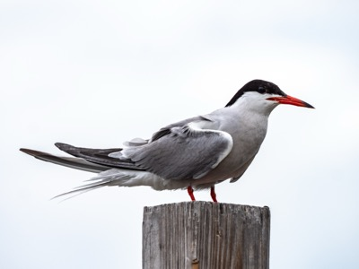
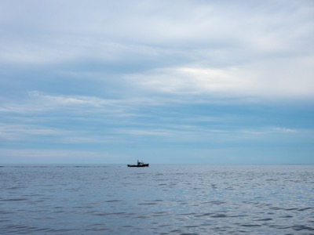
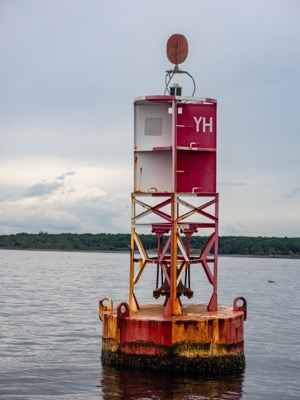
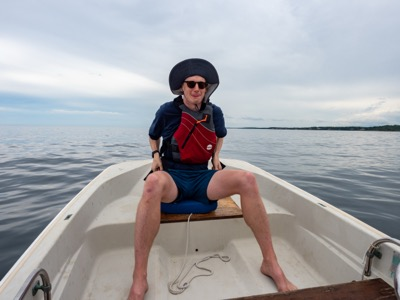
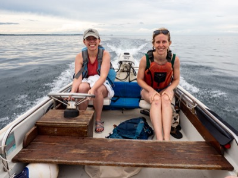
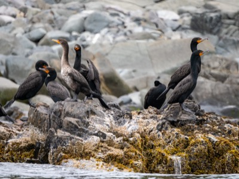
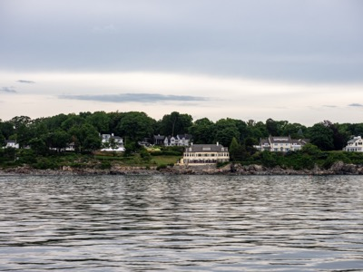
Conclusion
One challenge of this project is that I read In Search of Lost Time at the same time that I wrote the essay and took the pictures. This was difficult in terms of scheduling (in 6 weeks, I've written something like 17,000 words, taken several thousand pictures, put together a website, albeit not a terribly good one, and read a 7-volume novel of more 1.2 million words), but it was also difficult in that my project developed alongside Proust's, at least as I experienced it. I didn't know very much about the novel when I conceived the project, and the volumes I read as I worked on different segments of my essay affected those segments in ways that would be difficult to undue via editing as my understanding of the novel became more full. When I took the pictures, for example, I'd read the first volume and was reading the second—two volumes that focus on the narrator as a child and a young man, which inspired my decision to take pictures in a place I spent a lot of time as a child. I wrote the section on my grandfather's Bog as the narrator's grandmother sickened and died; I wrote about the social atmosphere of Gerrish Island as the narrator spent all of his time at the Guermantes' parties. And as I wrote about time—in fact, just after finishing a first draft of the third section—I read Time Regained, which required significant revisions to my draft. This essay stands on the shifting sands of my understanding of the novel. If we're to believe the Gospel of Matthew, a foundation of sand is a bad thing,8 and this project would certainly have been different—more unified and coherent, as well as less focused on my youth—if I'd read the novel first.
But while I accept the project would have been different, I'm not sure it would be better. In Search of Lost Time is dynamic, reflecting the shifts within and between its main character and narrator. As I read, I frequently addressed the narrator in my thoughts, or, in the 5th and 6th volumes when his choices become increasingly vexing, aloud: Marcel, if that's your name, just…take a deep breath. He's a neurotic, obsessive guy, and it saddens me when he uses his incredible intelligence, eloquence and sensitivity against himself. I imagine taking him aside like one of my students—it's telling to me that his teachers do not appear in the novel—and giving him some advice. Not every thought needs to be followed to its furthest extreme. You don't need to obsess over what Gilberte or Albertine—his lovers at various stages in his life—get up to when you're not around, you don't need to stalk the Duchess of Guermantes, and you don't need to invest every painting, flower, vista or musical phrase with immense significance. Not every feeling needs to be acted on. Wanting your mother to kiss you goodnight is not an emergency, even if it feels like it; keeping Albertine captive won't make you worry about her less. Like so much of what you do, it will only make you—and her—even more miserable than you already are. Also, his novel isn't going to write itself; much more important than waiting around to find the perfect inspiration or idea is sitting down and starting to write.
When I address the narrator like this, I'm addressing myself. He's more neurotic than I am, certainly, not to mention more intelligent and sensitive, but I can see a similar tendency to overanalyze, to doubt, and to invest artistic questions with a degree of importance that they may not deserve. And as I began this project, and at various points throughout the process, it didn't seem to be going particularly well. There were many moments I would have benefitted from taking a deep breath. Each photo session didn't go as I'd hoped, and while I always knew I'd be able to pull something together, there was—and still isn't—any guarantee that what I've written here is as important and interesting as I'd like. I often felt like the narrator searching for the great philosophical idea he thinks he needs for his novel; in fact, I feel like that every time I write something, and while this feeling doesn't paralyze me for decades at a time, I also haven't written anything like In Search of Lost Time.
There is another narrator in the novel, however—the older, calmer, more mature and reflective author of the novel who's looking back on the young man he once was. This narrator's voice slips in and out of the narrative as the younger narrator grows and changes, slowly drawing nearer to the older version of himself. By Time Regained, the two narrators are closer together, even identical in some moments, especially in the scenes set long after he discovers how to regain time. This is a simplification—one that takes the myth of the novel uncritically, and leaves out how his lengthy stays in sanitariums and the war may have affected him—but the narrator resolves his greatest anxieties around the loss of time, and in doing so, discovers his artistic method. Documenting this process is far beyond the scope of this piece, but to summarize briefly, he realizes that time can be regained through involuntary memory episodes surrounding trivial objects and moments. These moments exist beyond time, and they reveal the true nature of the narrator's impressions, which is to say, they are a glimpse of his reality, and a suitable subject for a novel. In fact, exploring these moments' significance is the work of art; they must be the subject of his novel. Having understood this as he waits in the Guermantes' drawing room to enter yet another party, the younger narrator feels that he is ready to write, and so becomes the older narrator, rushing to finish his work before he dies.
If I'd read the whole novel before starting, I think I would have imitated this older narrator, and in so doing, disguised the difficulties and anxieties that were with me as I worked on the project. There aren't decades of development between the version of me who wrote the intro and the version who's writing the conclusion 6 weeks later, of course, but there are some differences, mostly related to what it feels like to work on a big project. The beginning and the end tend to feel great in their own ways—but there's a vast, unstructured middle where it can be hard to remember the optimism of starting or look ahead to the satisfaction of finishing. The introduction—over-optimistic and overly idealized—invests its questions with too much importance, and the first two sections show increasing doubt and insecurity. I don't have time to do this, really, but it's tempting to edit the project—even take new pictures, maybe—to remove any glimpses of that anxiety by writing an essay whose conclusions are clear from the start. But to do so would be dishonest; it is better, I think, to trade some coherence and unity for a more vulnerable portrayal of what it's like to work on a project whose artistic value and degree of success is unclear. Perhaps some artists feel supremely confident throughout their process, but I certainly do not, and this essay doesn't hide those worries very well.
Ultimately, I'm not sure if I discovered anything new about photography's artistic value or my artistic method, or if this summer has just helped me adjust my attitude surrounding my work. Perhaps it is a bit of both. As I read the later volumes of In Search of Lost Time, I found myself nodding along to the moments in which the narrator describes a successful artistic process, but rereading my introduction now, I see some differences with my understanding of art with those described in the book. When I read the narrator's description of Vinteuil's music, which in his telling captures a wide variety of real subjects, such as "lily-while pastoral dawn," "a rustic bower of honeysuckle against white geraniums," "flat, unbroken surfaces like those of the sea on a morning that threatens storm," "rose-red daybreak," or the "scorching but transitory sunlight" of noon, I see reflections of my artistic aim to photograph my subjects faithfully, to capture something real and evocative within them (V.333). The same is true of the narrator's memory experiences; describing them accurately and specifically is clearly important to their success, in the same way that pictures need to be focused and well-exposed. And yet when the narrator suggests that Vinteuil's work draws nearer to the "unknown country" or "inner homeland" which lies within every artist, I see that I have made an error in assuming my subjects lie entirely outside myself (V.342). A photograph of a creek should feel like meeting a naiad, but what I did not understand is that capturing this feeling relies as much as understanding my experience of the creek—my "impression," "printed" in me "by reality itself" as the narrator suggests—as it does on understanding the creek (VII.275). I cannot ignore the work of interpreting my "inner book of unknown symbols," even if that work is difficult and sometimes feels vulgar, and I can't allow myself to be too governed by my artistic desire (VII.274). Even if I think the narrator goes too far when he says that his unintentional encounter with the paving stones is "the mark of their authenticity"—surely artistic desire counts for something, and it seems a little too coincidental that the narrator stumbles on the stones just as he's feeling most dejected about completing his work—I can also be open to accidentical and fortuitous discoveries in my work as well (VII.274). I must not be afraid to forget, or to let my pictures sit for a time, to discover what's valuable in them later. Similarly, just as Vinteuil needs Mlle Vinteuil's friend to finish his work, and just as the narrator needs all of the social creatures of the Guermantes Way to be the "cement" or "transforming fluid" into which he can set "like jewels" his memory experiences, I must also be open to the various atmospheres surrounding me (VII.407, 355).
Rereading my essay to search for errors—I didn't find very many, which probably means I wasn't looking very well—I don't think I need to change how I take pictures. Certainly, In Search of Lost Time has pointed out some errors in my thinking about art, but these lessons—to let the camera do its objective work while at the same time being unafraid of my subjective impressions, to allow accidental discoveries that don't align with my artistic desire, to admit social atmospheres into my work, and to take pictures not as quixotic attempts to defeat the Law of Oblivion, but in service of allowing myself to forget—these lessons seem less important than just allowing myself to be an artist without as much anguish or doubt. I might even apply this a step further: it's ok to get a little neurotic sometimes; I don't need to hide the anxieties of the artistic process. In fact, like the older narrator who wrote 7 volumes highlighting the intense neuroticism of his younger self, allowing this side to show might help me take better pictures as well. And so let me end with a small apology to the reader: I'm sorry, for the 17,000 words I wrote, for the thousands of pictures I took, for the dozens of pictures I published whose point, ultimately, is nothing more than a version of my admonition to the narrator as I waited anxiously for him to mature: take a deep breath and keep taking pictures.
Other photographs from Maine, Summer 2021
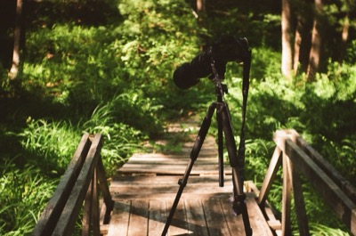
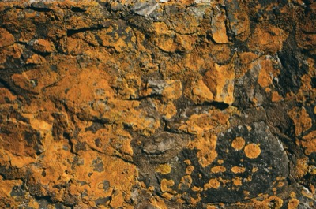
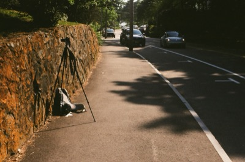